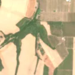
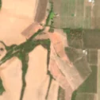

35,5 ha de pădure schimbată lângă Neudorf
Între 25 aprilie 2026 și 15 mai 2026, pe aproximativ 35,5 ha de pădure din comuna Zăbrani, lângă Neudorf, județul Arad, imaginile Sentinel-2 arată că vegetația a dispărut sau s-a schimbat puternic. Nu pare o tăiere de lemn.
Autorizația de tăiere
nu e tăiere de pădure
Schimbarea nu pare tăiere de lemn, așa că autorizațiile de tăiere nu se aplică. E o lucrare, nu o exploatare de lemn: drum, cale ferată, linie electrică, conductă, carieră sau șantier.


Înainte și după: Copernicus Sentinel-2, 10 m pe pixel, conturul zonei cu portocaliu. Poza detaliată (Esri World Imagery) e de acum 1–4 ani: arată ce era acolo înainte, nu tăierea.
Pe scurt
- Identificator
- 20260515_46043_21639
- Locul
- Neudorf, comuna Zăbrani, județul Arad (SIRUTA 12778)
- Coordonate (centru)
- 46.04511, 21.63771 · Google Maps · OpenStreetMap
- Suprafața
- 35,5 ha (din pixeli de 10 m; ± câțiva pixeli pe margine)
- Ultima imagine cu pădurea întreagă
- 25 aprilie 2026
- Prima imagine cu schimbarea
- 15 mai 2026
- S-a lărgit
- 23 august 2026
- Imagini în care se vede schimbarea
- 15
- Cât de sigur e semnalul din satelit
- scăzută
- Terenul
- în afara amenajamentelor silvice publicate (pășune, mal de apă sau pădure privată fără amenajament în registru)
- Chiar lângă
- o altă schimbare, văzută pe 25 aprilie 2026: pagina ei
- Garda Forestieră
- Oradea
Dacă vrei să verifici sau să sesizezi
- Pădurile din județul Arad sunt în grija Gărzii Forestiere Oradea, care controlează tăierile și dă amenzile.
- Formularul Gărzii Forestiere Naționale primește sesizări și fără nume. Trimite linkul acestei pagini, coordonatele și pozele. Dacă tăierea e în desfășurare, sună la 112.
- Autorizațiile și transporturile de lemn se pot căuta în Inspectorul Pădurii.
Pagina arată ce se vede din satelit și ce scrie în registrul public; nu e o dovadă în sine.
Cum citezi zona
Linkul acestei pagini nu se schimbă. Dacă zona iese vreodată de pe hartă, pagina rămâne, cu data și cu ce știam despre ea.
Pădurea RO, zona 20260515_46043_21639: 35,5 ha, Neudorf, comuna Zăbrani, județul Arad; schimbare văzută din satelit între 25 aprilie 2026 și 15 mai 2026. https://iliemihai.github.io/padurea-ro/zona/20260515_46043_21639/ (consultat la [data]). Date: CC BY 4.0.
Datele zonei: GeoJSON · toate zonele: date deschise · licența CC BY 4.0.
Istoricul zonei pe hartă
Starea se poate schimba când registrul publică o autorizație sau când analistul vede poze mai bune. O ținem aici, ca un link citat să arate și ce spuneam atunci.
Pe hartă cel târziu din 5 noiembrie 2026.
- 5 noiembrie 2026 – azi · nu e tăiere de pădure
Detalii tehnice, pentru verificare
De ce acest nivel de încredere:
- văzută schimbată în 15 imagini diferite
- peste 3 ha
- pădurea din jur e neschimbată
- AI-ul vede teren agricol
- în poze, zona se schimbă vizibil față de pădurea din jur
- Placa Sentinel-2
- 34TES
- NDVI de referință
- 0.82
- NBR de referință
- 0.59
- Scăderea în pădurea din jur
- 0.01
- Persistență
- 0.99
- NDVI / NBR după
- 0.481 / 0.163
- Analistul de zi (model)
- agricol · 0.8 · claude-haiku-5-5
Cum se calculează fiecare: metodologia.
Pune harta zonei într-un articol
Copiază codul în articol (merge în majoritatea site-urilor de știri). Sau pune doar linkul: WhatsApp, Facebook și X arată singure poza zonei.